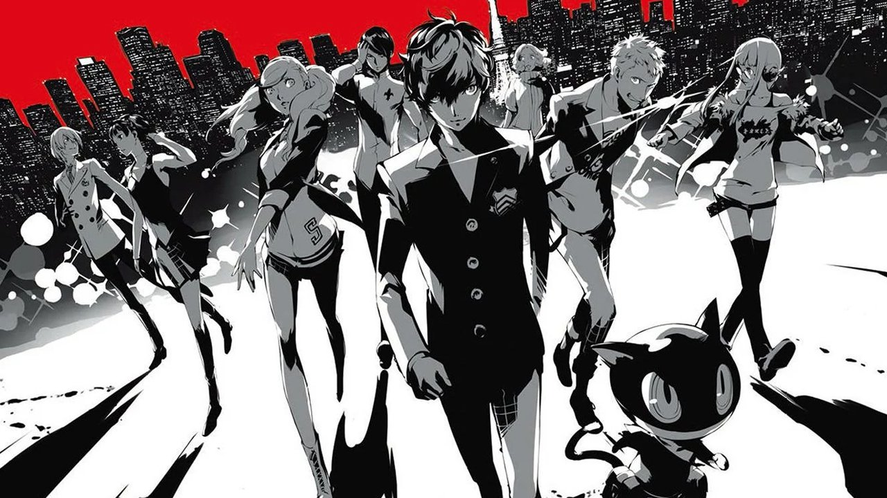
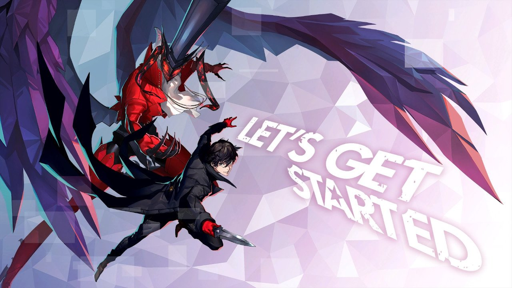

Sobre
Habilidades
Formação
Hobbies
Books
Phantom Thieves of Hearts
Os Phantom Thieves of Hearts, também conhecidos simplesmento como os Phatom Thieves, são u m grupo dee usuários de Persona na franquia Persona 5. Cansados da enganação, hipocrisia e corrupção envolta deles, os Phantom Thieves são devotos a "roubar" os corações corrompidos dos adultos malignos para mudar e reformar a sociedade para melhor. Depois de seu primereiro assalto, o grupo foi nomeado.

O Grupo foi originalmente formado por Joker, Morgana, Ryuji Sakamoto e Ann Takamaki quando eles descobriram que o professor de volley da Escola Shuhjin, Suguru Kamoshida, tinha abusado seus estudantes e molestado a amiga de Ann, Shiho Suzui, levando ela a tentar se suicidar o que a colocou em coma. No entanto, desde que nenhum estudante, resposável ou professor está disposto a deebater contra Kamoshida por conta de seus favoritismo vindo do diretor, o grupo decide resolver o problema por conta própria e fazer ele confessar o seus crimes roubando as distorções em seu coração que esta guardada dentro de seu palácio no Metaverso.
Habilidades
Usando um misterioso aplicativo de smartphone, eles saem em aventuras fantásticas usando poderes de outro mundo para entrar nos corações das pessoas(especificamente adultos corruptos em posições de pooder) em oredem de reformar e transforma-los. Os Phantom Thieves percebem que a sociedade força as pessoas a vetir máscaras para proteger suas vulnerabilidades interiores, e confrontando a si mesmos e literalmente arrancando fora suas máscaras os heróis despertam seus Personas, usando seus poderes para ajudar aqueles em necessidade.

Um Persona é a manifestação da personalidade de um usuário de Persona. Um Persona é similar a uma Sombra. Sombras são a manifestação maléfica dos pensamentos interiores de alguém, enquanto um Persona é uma manifesção dos mesmos sentimento mas domada e treinada.
Hobbies
Joker
Gosta de jogar video games, ver filmes e sair com os amigos.
Ann Takamaki
Gosta de sair para comprar roupas, sair com os amigos e comer doces.
Ryuji Sakamoto
Gosta de matar aula, correr e sair com os amigos.
Books
- Arsène Lupin O Ladrão de Casaca
- Arsène Lupin Contra Herlock Sholmes
- Arsène Lupin A Agulha Oca
- Arsène Lupin 813
- Arsène Lupin A Rolha de Cristal